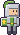
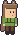
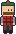
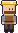
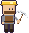
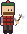

Villagers
Everyone who can live in your village, as they look in the game.

Blacksmith
Runs a shop: 94 goods.
Runs a shop: 94 goods.
Cook
Runs a shop: 11 goods.
Runs a shop: 11 goods.
War engineer
Runs a shop: 3 goods.
Runs a shop: 3 goods.

Herbalist
Runs a shop: 66 goods.
Runs a shop: 66 goods.

Fisher
Runs a shop: 13 goods.
Runs a shop: 13 goods.
Shipwright
Runs a shop: 62 goods.
Runs a shop: 62 goods.

Demolitionist
Runs a shop: 5 goods.
Runs a shop: 5 goods.
Tailor
Runs a shop: 16 goods.
Runs a shop: 16 goods.

Recruiter
Hires soldiers for your army.
Hires soldiers for your army.

Trainer
Trains your soldiers and sells upgrades for them.
Trains your soldiers and sells upgrades for them.

Quartermaster
Rebuilds a ruined village for you and hires village workers.
Rebuilds a ruined village for you and hires village workers.

Forester
The head woodcutter: runs the Woodcutter's lodge and its chest.
The head woodcutter: runs the Woodcutter's lodge and its chest.
Head farmer
Runs the Farmhouse: choose what the farmers grow or gather.
Runs the Farmhouse: choose what the farmers grow or gather.

Mine foreman
Runs the Miners' hut and says what the miners bring up.
Runs the Miners' hut and says what the miners bring up.

Miner
Digs ore in the mine shaft and brings it to the hut.
Digs ore in the mine shaft and brings it to the hut.

Woodcutter
Fells trees on the home island and plants saplings.
Fells trees on the home island and plants saplings.

Farmer
Tills, sows and harvests the fields, or tends the animals.
Tills, sows and harvests the fields, or tends the animals.